開卷有益 ／
分科測驗 ／ 生物 ／ 112 年112 年分科測驗生物試題與答案
這一頁是民國 112 年分科測驗生物的整份歷屆試題，共 44 題，題目與標準答案出自大考中心 分科測驗歷年試題（依著作權法 §9，考試試題不受著作權保護），其中 44 題附有詳解。以下逐題列出題幹、選項與答案；要計時作答或記錄成績，請用線上練習。
大學入學考試中心原始場次代碼：分科生物
線上作答這一科 →
全部 44 題
第 1 題
某生將實驗動物進行甲狀腺切除手術,10天後分析其血清中激素含量,下列敘述何者
正確?
（A） 降鈣素升高（B） 促甲狀腺素釋放激素升高（C） 促甲狀腺素不變（D） 副甲狀腺素不變答案：（B）
詳解與考點 正解：甲狀腺切除後，甲狀腺素濃度下降，對下視丘的負回饋減弱，因此促甲狀腺素釋放激素會增加。題幹指定在手術後 10 天檢測，判斷重點是切除後的內分泌負回饋方向，故選 B。
A：降鈣素由甲狀腺的濾泡旁細胞分泌；甲狀腺被切除後，其分泌來源消失，濃度不會升高。
C：甲狀腺素降低也會減弱對腦下垂體的負回饋，促甲狀腺素傾向增加，不能維持不變。
D：副甲狀腺仍在，副甲狀腺素主要受血鈣濃度調節；失去降鈣素後血鈣調節狀態會改變，副甲狀腺素可能因血鈣回升而受到負回饋，不能判為不變。
本題考點：內分泌負回饋（negative feedback）——末端激素下降時，回推其上游釋放激素通常增加；甲狀腺軸（hypothalamic-pituitary-thyroid axis）——以促甲狀腺素釋放激素、促甲狀腺素與甲狀腺素的回饋方向判題；血鈣恆定（calcium homeostasis）——降鈣素與副甲狀腺素需連同血鈣變化一起判斷。
第 2 題 （多選）
下列哪些因素傾向改變族群等位基因的頻率?
（A） 族群沒有遷入與遷出的個體（B） 族群中的雌、雄個體隨機配對（C） 沒有定向或分裂天擇,有利於中間表型（D） 不受天擇篩選之中性突變（E） 環境擾動隨機移除族群內個體答案：（C）（D）（E）
詳解與考點 正解：判準是等位基因頻率會因天擇、突變或隨機抽樣而改變。有利中間表型的穩定型天擇會改變不同基因型的存活或繁殖機會；中性突變會引入新等位基因；環境擾動隨機移除個體則造成遺傳漂變。故選 CDE。
C：有利中間表型的穩定型天擇會使不同表型的繁殖成功率不同，因而傾向改變族群中等位基因的頻率。
D：即使突變不受天擇篩選，突變本身仍會產生或改變等位基因，能使其頻率改變。
E：環境擾動若隨機移除部分個體，存留下來的是原族群的隨機樣本，可能使等位基因頻率發生遺傳漂變。
A：沒有遷入與遷出代表沒有基因流入或流出，這是維持等位基因頻率不變的條件之一。
B：雌雄個體隨機配對會改變基因型組合的比例，但在沒有其他作用時不會單獨改變等位基因頻率。
本題考點：哈溫平衡（Hardy-Weinberg equilibrium）——看到無遷移、隨機交配等條件時，先判斷它們是否排除頻率改變機制；天擇（natural selection）——不同表型的存活或繁殖差異可改變等位基因頻率；遺傳漂變（genetic drift）——族群被隨機抽樣或縮小時，等位基因頻率可在沒有天擇下改變。
第 3 題 （多選）
從達爾文的物種原始到現代綜合論與中性理論,演化的概念與機制不斷被深化甚至挑
戰,下列敘述哪些正確?
（A） 功能基因的DNA鹼基突變時,必會影響轉譯出的蛋白質的功能,因而受天擇篩選（B） 中性突變不影響生物演化（C） 現代綜合論與中性理論所認為的演化主要動力不同（D） 表型與DNA序列變化都會被天擇所篩選（E） 族群中等位基因頻度隨世代改變即為演化答案：（C）（E）
詳解與考點 正解：現代綜合論把遺傳變異與天擇結合來說明演化；中性理論則強調許多分子層次的變異可不受天擇支配，而由遺傳漂變改變頻率。無論改變原因為何，族群等位基因頻度跨世代改變就是演化的操作型定義。故選CE。
C：現代綜合論與中性理論都承認變異，但前者強調天擇在演化中的重要性，中性理論強調中性突變與遺傳漂變在分子演化中的作用，主要動力的著重不同。
E：演化不是指單一個體一生中的改變，而是族群基因庫內等位基因頻度隨世代改變。
A：功能基因的DNA突變不必然改變蛋白質功能；可能是同義替換，也可能未影響蛋白質作用，因此不能一概認定必受天擇篩選。
B：中性突變雖不改變適存度，仍可因遺傳漂變在族群中增加、減少或固定，因而參與演化。
D：天擇篩選的是會影響存活或繁殖成功的可遺傳表型差異，並非所有表型與所有DNA序列變化都會受到天擇作用。
本題考點：中性理論（neutral theory）——遇到不影響適存度的分子變異，要考慮遺傳漂變而非直接排除演化；天擇（natural selection）——判斷是否受天擇時，看變異是否造成可遺傳的適存度差異；演化的操作型定義（operational definition of evolution）——以族群等位基因頻度的世代改變為準，不以個體改變為準。
第 4 題
下列有關植物共生性菌根的敘述,何者正確?
（A） 菌根是植物根部與細菌的共生構造（B） 共生菌可提供植物生存所需的醣類等養分（C） 共生菌可增加植物根部的表面積,以增加水分及礦物質的吸收（D） 所有共生菌都會在植物根部形成外鞘答案：（C）
詳解與考點 正解：菌根是植物根與真菌形成的互利共生。真菌菌絲可向土壤延伸，等於增加根系與土壤接觸的有效表面積，使植物較易吸收水分與礦物質；這正符合（C）的描述。故選C。
A：菌根的共生夥伴是真菌，不是細菌。判斷時先分清菌根中的「菌」指真菌菌絲。
B：在菌根互利關係中，植物以光合作用產生的醣類供給真菌；真菌較主要回饋水分與無機礦物質，供給方向相反。
D：形成根外鞘是外生菌根的特徵，不是所有菌根都具有的構造；例如叢枝菌根不以根外鞘為主要特徵。
本題考點：菌根（mycorrhiza）——看到根與真菌互利共生時，先判植物給醣、真菌助吸水與礦物質；菌絲表面積（hyphal surface area）——細長分枝的菌絲可擴大吸收範圍，是菌根有利植物的機轉；菌根類型（mycorrhizal types）——遇到外鞘描述時，要限定於外生菌根，不可推及全部菌根。
第 5 題 （多選）
嬰兒正在吸吮母乳時,除了刺激乳腺泌乳外,正在哺乳的媽媽有時會感受到子宮收縮。
下列有關吸吮動作造成上述現象的敘述,哪些正確?
（A） 乳頭的感覺受器受刺激後,直接經由神經傳導引起子宮收縮（B） 腦垂腺前葉釋放催乳素,促進乳汁分泌（C） 腦垂腺前葉釋放濾泡刺激素,引起子宮收縮（D） 腦垂腺後葉釋放催產素,引起子宮收縮（E） 腦垂腺前葉釋放黃體成長激素,刺激黃體素分泌造成子宮收縮答案：（B）（D）
詳解與考點 正解：嬰兒吸吮乳頭引發的是神經內分泌反射：感覺訊號送至下視丘後，分別調節腦垂腺前葉的催乳素與後葉釋放的催產素。前者促進乳汁生成，後者可使子宮平滑肌收縮，所以兩項敘述都成立。故選BD。
B：腦垂腺前葉分泌催乳素，能促進乳腺製造乳汁，符合哺乳時泌乳增加的現象。
D：催產素由下視丘合成並由腦垂腺後葉釋放，可使子宮平滑肌收縮；它也參與乳汁排出的反射。
A：乳頭受到刺激的感覺神經訊號不會直接到達子宮使其收縮，須經下視丘與血液中的催產素完成內分泌傳遞。
C：濾泡刺激素雖由腦垂腺前葉分泌，主要與生殖腺的濾泡發育相關，不是引起子宮收縮的哺乳反射訊號。
E：選項所稱黃體成長激素不是此哺乳反射的訊號；此反射的子宮收縮關鍵是催產素，而非經由黃體素分泌造成。
本題考點：神經內分泌反射（neuroendocrine reflex）——感覺刺激若先進入中樞再以激素作用於遠端器官，要判作神經與內分泌共同參與；催乳素（prolactin）——問乳汁生成時選腦垂腺前葉的催乳素；催產素（oxytocin）——問乳汁排出或子宮平滑肌收縮時選腦垂腺後葉釋放的催產素。
第 6 題 （多選）
由單醣、胺基酸、核苷酸合成為多醣、蛋白質與核酸的過程中有哪些共同點?
（A） 為脫水反應（B） 在細胞質內進行（C） 需要酵素參與（D） 為耗能反應（E） 主要在細胞分裂時進行答案：（A）（C）（D）
詳解與考點 正解：單醣、胺基酸與核苷酸聚合成大分子，都是由小分子建立共價鍵的同化過程。這類聚合具有脫水反應的性質，需要酵素催化，也需要能量或活化單體來推動鍵結形成。故選ACD。
A：單體連接成多醣、蛋白質與核酸時，屬於由小分子組成大分子的縮合或脫水反應。
C：醣類、蛋白質與核酸的生合成都需要相應酵素催化，否則反應速率不足以支持細胞代謝。
D：建立高分子所需的鍵結是同化作用的一部分，需消耗能量或利用已活化的單體，不是自發的分解反應。
B：這些生合成並非都在細胞質內進行；例如核酸的合成可在細胞核內進行，植物的部分多醣合成也與胞器相關，因此不能列為共同點。
E：高分子合成是細胞生長、修復與日常代謝都會進行的過程，並非主要限於細胞分裂時。
本題考點：縮合／脫水反應（condensation/dehydration reaction）——由單體接成聚合物時，優先判斷是否形成鍵結並移除水分；同化作用（anabolism）——由小分子合成大分子通常需能量，不可和水解分解反應混淆；酵素催化（enzyme catalysis）——跨不同生物大分子的合成時，酵素參與是可共用的判準。
第 7 題
下列有關植物器官的敘述,何者正確?
（A） 僅塊根能儲存養分,其它種類的根不行（B） 蘿蔔的塊莖儲藏養分（C） 仙人掌肉質莖只具有儲藏養分的功能（D） 蓮藕是屬於莖的一種,可儲藏養分答案：（D）
詳解與考點 正解：蓮藕是地下莖的一種，屬於根莖，能儲存養分並由節長出芽與不定根。判斷植物器官時，要以構造來源與是否具有莖的節、芽等特徵為準，因此（D）正確。故選D。
A：不只塊根可以儲存養分；許多根可膨大形成貯藏根，植物的莖與葉也可能具有儲藏功能。
B：蘿蔔主要是膨大的根儲藏養分，不是塊莖。塊莖是莖的變態構造，常可見節與芽。
C：仙人掌的肉質莖除能儲水外，還常負責光合作用；「只具有儲藏養分」忽略了它的重要功能。
本題考點：根莖（rhizome）——地下構造若有節與芽，優先判作莖而非根；變態器官（modified organs）——儲存養分不是判器官身分的唯一依據，須再看構造特徵；仙人掌肉質莖（succulent stem）——葉退化後，莖常兼任光合作用與儲水。
圖1為1832年於阿根廷發現的大地獺(ground sloth)下顎化石,其後生物學家理察‧歐文(Richard Owen)則在1839年將其命名為Mylodon darwinii。
第 9 題
若科學家認為已滅絕的大地獺與現生樹獺外形相
似,而想以現代科學方法證明這兩物種有共同祖先,
則下列何者為最適合的方法?
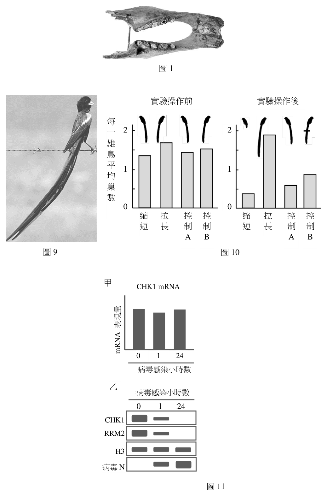
（A） 進行細胞培養觀察細胞型態的相似度（B） 以PCR擴增其DNA後比較相關DNA序列相似度
圖1（C） 萃取DNA後比較相關DNA長度相似度（D） 檢測骨頭主要組成成分的相似度答案：（B）
詳解與考點 正解：要以現代科學方法證明大地獺與樹獺有共同祖先，最直接的證據是比較可對應DNA序列的鹼基差異。若化石保存到可分析的DNA，PCR可先擴增目標片段，再和現生樹獺的同源序列比較；序列越相近，通常支持親緣關係越近。因此（B）最適合，故選 B。
A：已滅絕的大地獺無法進行活細胞培養，而且細胞型態相似度也不如遺傳序列能直接檢驗共同祖先。
C：DNA片段長度相同不代表鹼基序列相同。分辨親緣關係要比對同源DNA的序列，而不是只比較長度。
D：骨骼的主要化學成分在不同脊椎動物間普遍相近，無法提供足以區分近遠親緣的遺傳資訊。
本題考點：分子親緣學（molecular phylogenetics）——比較同源DNA或蛋白質的序列差異，可推估共同祖先與親緣遠近；PCR（polymerase chain reaction）——樣本中的目標DNA量很少時，先特異性擴增再分析；證據力比較（strength of evidence）——判親緣時優先採用可直接反映遺傳資訊的序列證據。
第 10 題
下列對於Mylodon darwinii命名法的敘述,何者正確?
（A） 是依發現者名字作為俗名的命名（B） 是以通用英文所進行的命名（C） 是依達爾文演化論進行命名（D） 是以林奈之二名法進行命名答案：（D）
詳解與考點 正解：Mylodon darwinii 由兩個拉丁化名稱組成，前一字 Mylodon 為屬名且字首大寫，後一字 darwinii 為種小名且小寫；這正符合林奈建立的二名法，故選 D。
A：darwinii 可以是為紀念人物而取的種小名，但整體名稱仍是學名，不是依發現者姓名構成的俗名；分辨關鍵在名稱格式而非字面是否像人名。
B：二名法慣用拉丁文或拉丁化形式作為國際學名，並非以通用英文命名。
C：物種可因分類、形態或紀念人物而得名，名稱中出現 darwinii 不表示命名方法是依演化論推導。
本題考點：二名法（binomial nomenclature）——學名由屬名加種小名組成，屬名首字母大寫、種小名小寫；學名與俗名（scientific name vs common name）——學名採統一格式以跨語言辨識，俗名不受此格式拘束；命名緣由與命名規則——名稱可紀念人物，但判別方法仍看二名法的結構。
第 11 題 （多選）
在蛋白質上加上醣鏈會形成醣蛋白,下列對於醣蛋白的敘述哪些正確?
（A） 所有的生物皆會合成醣蛋白（B） 真核細胞醣蛋白的合成是在細胞核完成（C） 真核細胞的細胞膜上具有醣蛋白（D） 病毒表面的醣蛋白,使其可進入特定宿主細胞（E） 細菌細胞壁組成之醣蛋白是致病的重要依據答案：（C）（D）
詳解與考點 正解：判準是醣蛋白的醣鏈常位於細胞表面或病毒外套膜，能參與辨識與結合。真核細胞膜上確有醣蛋白；病毒表面醣蛋白可辨認宿主細胞的特定受體，決定其進入的範圍。故選 CD。
C：真核細胞膜的蛋白質可帶有醣鏈，形成朝細胞外側突出的醣蛋白，參與細胞辨識與訊息接收。
D：病毒表面醣蛋白可與宿主細胞特定受體結合；這種專一性使病毒只容易進入相符的宿主細胞。
A：醣蛋白不是每一種生物都必定合成的產物，不能由它廣泛存在於生物系統就推成所有生物皆會合成。
B：真核細胞的醣蛋白在內質網與高基氏體的分泌途徑中合成與修飾，不是在細胞核完成。
E：細菌細胞壁的主要結構成分是肽聚醣，不是醣蛋白；把肽聚醣與醣蛋白混為一談，無法作為致病性的判準。
本題考點：醣蛋白（glycoprotein）——看到細胞表面辨識或受體結合時，優先判斷醣鏈修飾的膜蛋白；分泌途徑（secretory pathway）——真核醣蛋白的合成與修飾主要經內質網、高基氏體；宿主專一性（host specificity）——病毒能否進入細胞要看其表面蛋白與宿主受體是否相配。
第 12 題 （多選）
下列有關染色體與遺傳的敘述,哪些正確?
（A） 包法利-薩登以實驗數據證明基因位於染色體上（B） 決定果蠅眼睛顏色之基因位於體染色體上（C） 摩根的實驗發現性聯遺傳（D） 不同體色與翅形的果蠅雜交後,F2子代產生4種表型比率為9:3:3:1證實基因的連(聯)鎖（E） 染色體互換提供了表型的多樣與變化答案：（C）（E）
詳解與考點 正解：關鍵在區分染色體學說、性聯遺傳與獨立分配。摩根以果蠅實驗發現性聯遺傳，將特定性狀與性染色體連結；染色體互換則能重組等位基因組合，增加子代可呈現的表型變化。故選 CE。
C：摩根研究果蠅眼色遺傳時，發現性狀與性別相關，建立了性聯遺傳的實驗證據。
E：同源染色體在減數分裂時互換，可重組原有的等位基因組合，因而增加後代表型的多樣性。
A：包法利—薩登提出基因位於染色體上的染色體學說，屬理論推論；以實驗支持基因與染色體關聯的是後續果蠅研究。
B：果蠅常用的白眼遺傳例是 X 染色體上的性聯基因，不是位於體染色體。
D：F2 出現 9:3:3:1 是兩對基因獨立分配時的典型比例；若基因連鎖，會偏離此獨立分配的比例。
本題考點：染色體遺傳學說（chromosome theory of inheritance）——分辨理論提出與實驗驗證時，要看命題者是否以遺傳實驗連結性狀與染色體；性聯遺傳（sex-linked inheritance）——性狀分布隨性別而異時，檢查基因是否位於性染色體；互換（crossing over）——減數分裂的片段交換會重組等位基因組合，不等同於產生新基因。
第 13 題 （多選）
森林內一隻狼(捕食者)凝視著正在吃草的兔子(獵物),並緩慢移動靠近此尚未警覺
到危險的獵物,下列有關捕食者和獵物當下生理狀態的敘述,哪些正確?
（A） 捕食者體內釋放乙醯膽鹼增強其心肌的收縮（B） 捕食者運動神經細胞釋放乙醯膽鹼促進骨骼肌收縮（C） 捕食者交感神經系統活性增加（D） 獵物消化道的交感神經系統活化中（E） 獵物消化道的副交感神經系統活化中答案：（B）（C）（E）
詳解與考點 正解：題幹的行為線索是狼正接近獵物，需啟動骨骼肌並提高警戒，兔子則尚未警覺且正在取食。狼的運動神經元以乙醯膽鹼作用於骨骼肌，交感神經活性增加；兔子的消化道維持副交感神經活化。故選 BCE。
B：體運動神經元在神經肌肉接合處釋放乙醯膽鹼，促使骨骼肌收縮，符合狼緩慢移動的動作需求。
C：狼準備捕食時需提高心肺輸出與骨骼肌供能，交感神經系統活性增加。
E：兔子尚未察覺威脅且正在吃草，消化道的副交感神經活動較符合休息與消化狀態。
A：乙醯膽鹼確實可作用於骨骼肌，但心肌收縮增強主要由交感神經的正腎上腺素性作用促成；副交感的乙醯膽鹼作用則傾向降低心率。
D：消化道交感神經活化通常抑制消化活動，與尚未警覺、正在取食的兔子當下狀態不符。
本題考點：自律神經系統（autonomic nervous system）——警戒或逃跑時偏交感，休息、進食與消化時偏副交感；神經肌肉接合處（neuromuscular junction）——體運動神經元以乙醯膽鹼引發骨骼肌收縮；效應器判讀（effector identification）——同是乙醯膽鹼，作用於骨骼肌與心肌時的受體和效果不同。
第 14 題 （多選）
一胜肽鏈的序列為Met-Phe-Ser-Tyr-Cys-Arg,從胜肽鏈的合成開始到結束,下列哪些分
子會出現在核糖體的A位?
（A） 帶有Ser胺基酸的tRNA（B） 不帶有胺基酸的tRNA（C） 帶有Gln胺基酸的tRNA（D） 帶有胜肽鏈Tyr-Cys的tRNA（E） 帶有胜肽鏈Met-Phe-Ser-Tyr-Cys的tRNA答案：（A）（E）
詳解與考點 正解：A 位接收下一個胺醯 tRNA。序列 Met-Phe-Ser-Tyr-Cys-Arg 中，帶 Ser 的 tRNA 會進入 A 位；帶 Cys 的 tRNA 接上既有胜肽鏈後，帶 Met-Phe-Ser-Tyr-Cys 的 tRNA 仍在 A 位。故選 AE。
A：起始 Met-tRNA 在 P 位，Phe-tRNA、Ser-tRNA 依序進入 A 位，故帶 Ser 的 tRNA 會出現在 A 位。
E：帶 Cys 的 tRNA 進入 A 位並形成胜肽鍵後，攜帶完整的 Met-Phe-Ser-Tyr-Cys 鏈；轉位前仍位於 A 位。
B：去醯化 tRNA 轉位後從 P 位移至 E 位，不會進入 A 位。
C：題示胜肽序列沒有 Gln，帶 Gln 的 tRNA 不會進入 A 位。
D：成長胜肽須含有先前所有胺基酸；Tyr-Cys 片段不符合由 Met 起始的序列。
本題考點：核糖體 A、P、E 位（A/P/E sites）——A 位接收胺醯 tRNA、P 位持有成長胜肽鏈、E 位排出 tRNA；轉譯延長（translation elongation）——依序追蹤胺基酸，可判斷每次進入 A 位的 tRNA；轉位（translocation）——胜肽鍵形成後，帶胜肽的 tRNA 由 A 位移到 P 位。
「2050淨零碳排」是全球積極倡導的永續發展策略,可以吸收及儲存二氧化碳(CO2)的「碳匯」(carbon sink),是減少二氧化碳排放的重要策略之一。
第 15 題 （多選）
植物栽種可被用來作為碳匯執行行動之一,下列敘述哪些正確?
（A） 植物可以吸收但不排放二氧化碳（B） 只有植物可以進行固碳作用（C） 生長在水中的植物也可行固碳反應（D） 植物可將CO2的氧分子轉變成O2後釋放（E） 植物可將CO2的碳分子轉變成醣類後儲存答案：（C）（E）
詳解與考點 正解：共同情境指出碳匯要吸收並儲存二氧化碳。水生植物同樣能以光合作用固定無機碳；植物固定的 CO2 碳原子可進入醣類等有機物並暫時儲存，因此都能增加碳匯。故選 CE。
C：生長在水中的植物可利用水中可取得的無機碳進行光合作用，仍能把碳固定到有機物中。
E：光合作用的碳固定會使 CO2 的碳原子進入醣類等有機分子，生物量增加時可形成碳的儲存。
A：植物也進行細胞呼吸並排放 CO2，不能說只吸收而不排放。
B：藻類、藍綠菌等其他光合生物也能固碳，固碳並非只有植物可以進行。
D：光合作用釋放的 O2 主要來自水的分解，不是將 CO2 中的氧原子直接轉變並釋放。
本題考點：碳匯（carbon sink）——判斷碳匯時看是否把大氣或水中的無機碳固定並儲存在生物量或環境中；碳固定（carbon fixation）——CO2 的碳原子進入有機物，是光合作用減少無機碳的關鍵；光合作用釋氧（photosynthetic oxygen evolution）——釋出的 O2 來源是水，不可誤認為來自 CO2。
第 16 題
合成生物學是具有可在生物中設計一條新代謝路徑的生物技術。若要藉由合成生物學
改造大腸桿菌,使其有固碳的能力,下列何種實驗策略的成功性較大?
（A） 阻止五碳醣轉變成核苷酸（B） 促進殺菌毒素的產生（C） 促使三碳醣的新合成（D） 改變細菌轉譯起始密碼子答案：（C）
詳解與考點 正解：題幹要把大腸桿菌改造成具有固碳能力，核心是新增能將 CO2 轉為有機碳骨架的代謝路徑。促使三碳醣的新合成可讓無機碳進入有機分子，是最直接符合固碳目標的策略，故選 C。
A：阻止五碳醣轉變成核苷酸只會干擾既有代謝物的用途，沒有建立 CO2 進入有機物的固定步驟。
B：殺菌毒素的產生關係到抑制其他細菌，與把 CO2 轉成有機碳無直接關係。
D：改變轉譯起始密碼子會廣泛影響蛋白質合成，卻沒有指定可固定 CO2 的新酵素或代謝路徑。
本題考點：合成生物學（synthetic biology）——評估改造策略時，要把目標功能對應到需新增的酵素與代謝流程；碳固定（carbon fixation）——固碳的必要條件是將無機 CO2 納入有機分子；代謝途徑工程（metabolic pathway engineering）——與目標產物無直接連結的毒素或轉譯改動，不能取代關鍵代謝步驟。
科學家找到了一種LCS2基因的植物突變株,編號命名為lcs2-1。研究發現在不同鈣離子濃度下,lcs2-1突變株的側根數目與野生型植物(Col-0)比起 18 Col-0 lcs2-1 a來會有不同的表現型,結果如圖2,柱狀圖上方字母相同者表示 15 b 側 12 . b表現型無差異,字母不同者表示有顯著差異。 根 9
數
6
d 3 .
0
0.2 2
鈣離子濃度(mM)
圖2
第 18 題
依據圖2的數據,該野生型與 lcs2-1 突變株的根部表型,何者正確?
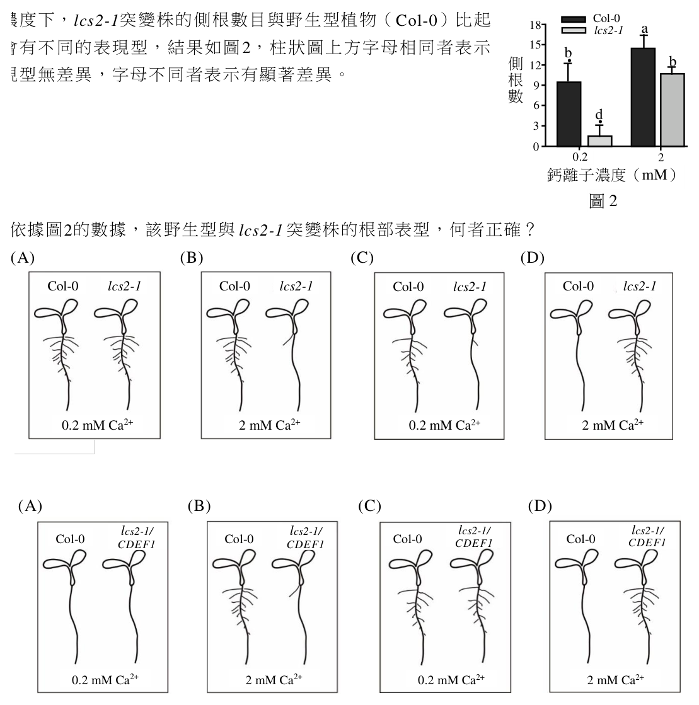
（A） （B） （C） （D） Col-0 lcs2-1 Col-0 lcs2-1 Col-0 lcs2-1 Col-0 lcs2-1
0.2 mM Ca2+ 2 mM Ca2+ 0.2 mM Ca2+ 2 mM Ca2+答案：（C）
詳解與考點 正解：圖2的顯著性字母依序呈現 0.2 mM Ca2+ 下 Col-0 為 a、lcs2-1 為 b，2 mM Ca2+ 下 Col-0 為 b、lcs2-1 為 d。相同字母代表無顯著差異，因此野生型在高鈣下的側根數與低鈣下突變株相近，而高鈣下的 lcs2-1 側根數最低。能同時呈現這四組相對表型的圖示為 C，故選 C。
A：0.2 mM Ca2+ 下兩種基因型分別標為 a、b，不能畫成沒有差異的相同側根表型。
B：Col-0 在 0.2 mM 與 2 mM Ca2+ 的字母為 a、b，兩者有顯著差異；把兩者視為相同會忽略柱狀圖的字母判準。
D：2 mM Ca2+ 下 lcs2-1 為 d，與其餘各組字母都不同，代表它不是可與其他組併列的表型，而是側根數最低的一組。
本題考點：顯著性字母（significance lettering）——同字母表示統計上無顯著差異，不同字母才可判為有差異；基因型與環境交互作用（genotype-by-environment interaction）——比較突變株時要同時看基因型與鈣離子濃度兩個條件；表型判讀（phenotype interpretation）——先從量化性狀的高低與顯著性重建表型，再對照圖示。
第 20 題
維生素B12主要以何種形式被人體腸道所吸收?
（A） 維生素B12單體（B） B12-haptocorrin複合物（C） B12-TC-II複合物（D） IF-B12複合物答案：（D）
詳解與考點 正解：腸道吸收的關鍵不只是維生素B12存在，而是它是否已與內在因子（intrinsic factor, IF）結合。食物中的B12先與haptocorrin結合，進入小腸後haptocorrin被分解，B12轉而結合IF；迴腸上皮細胞以受體辨認並內吞IF-B12複合物，所以主要吸收形式為IF-B12複合物。故選D。
A：游離的維生素B12單體不是迴腸細胞主要辨認的吸收形式；未先與IF結合時，無法走這條受體介導的吸收路徑。
B：B12-haptocorrin複合物形成於胃內，功能是保護B12並協助其通過酸性環境；到小腸後必須先被分解，不是腸道吸收時的主要形式。
C：TC-II是B12吸收進入體內後在血液中的運輸蛋白。分辨關鍵在吸收前的IF結合，與吸收後的血中運送不同。
本題考點：維生素B12吸收（vitamin B12 absorption）——問腸道吸收形式時，沿著「haptocorrin分解→IF結合→迴腸內吞」判斷；內在因子（intrinsic factor, IF）——看到B12與迴腸受體時，要以IF-B12複合物作為辨認單位；載體蛋白分工（carrier protein roles）——haptocorrin、IF與TC-II分別對應胃內保護、腸道吸收與血中運輸。
第 21 題
維生素B12主要儲藏在身體何處?
（A） 腸道（B） 胃（C） 肝臟（D） 膽囊答案：（C）
詳解與考點 正解：維生素B12在體內的主要儲存庫是肝臟。肝臟可將B12儲存，並經膽汁排入腸道後讓部分B12再被吸收；因此體內B12存量可維持較久，主要位置不是消化道腔或膽囊。故選C。
A：腸道是B12吸收與部分再吸收的場所，但不是身體儲存B12的主要器官。
B：胃會分泌與B12吸收相關的內在因子，也會形成B12-haptocorrin複合物；這些是處理與結合步驟，不等同於長期儲藏。
D：膽囊主要濃縮和儲存膽汁。雖然肝臟可將B12隨膽汁排出，B12本身的主要儲存處仍是肝臟而非膽囊。
本題考點：維生素B12儲存（vitamin B12 storage）——問主要庫存位置時，以肝臟判斷；腸肝循環（enterohepatic circulation）——物質可由肝臟排入膽汁並在腸道再吸收，但循環路徑不等於儲存器官；消化器官分工（digestive organ functions）——胃負責初步處理、腸道負責吸收、肝臟兼具代謝與儲存。
第 22 題
下列與維生素B12相關的敘述與推論,何者正確?
（A） 循環系統血漿中,肝動脈的維生素B12通常較肝門靜脈為高（B） 消化系統中形成B12-haptocorrin複合物之目的為使細胞進行內噬作用（C） B12-haptocorrin複合物的降解蛋白酶缺乏時,將造成維生素B12累積於胃部（D） 人體中維生素B12全由食物中取得,利用後部分可在腸道再吸收答案：（D）
詳解與考點 正解：關鍵在維生素 B12 的運輸路徑不是一次吸收完畢，而是先受不同蛋白質保護、在迴腸吸收，並可經膽汁進行腸肝循環。因此利用後的一部分 B12 可回到腸道再吸收，故選 D。
A：腸道吸收後的 B12 先經肝門靜脈進入肝臟。肝門靜脈並非通常會比肝動脈低，將兩者高低固定化不符合吸收後的運輸方向。
B：B12-haptocorrin 複合物的主要功能是保護 B12 通過胃的酸性環境；供迴腸細胞受體辨識並內吞的是 B12 與內在因子的複合物。
C：分解 B12-haptocorrin 的蛋白酶作用位置在小腸，使 B12 能轉交給內在因子。蛋白酶不足會妨礙後續吸收，不是使 B12 累積於胃部。
本題考點：維生素 B12 吸收（vitamin B12 absorption）——先辨認 haptocorrin 保護、內在因子接手、迴腸受體吸收三個階段；腸肝循環（enterohepatic circulation）——經膽汁進入腸道的物質可部分再吸收，不能把排入腸道等同完全排出；門靜脈運輸（portal circulation）——腸道吸收的營養物先到肝門靜脈，再由肝臟處理。
第 23 題 （多選）
根據文章所描述的觀察結果,下列敘述哪些正確?
（A） 各階段的螞蟻都會分泌相同的社會性分泌物（B） 蛹的社會性分泌物會影響幼蟲生長狀況（C） 成蟻照顧行為主要是發生在幼蟲蛻皮階段（D） 只有孤雌生殖的螞蟻可分泌社會性分泌物（E） 成蟻的照顧行為參與了蛹與幼蟲的互動答案：（B）（E）
詳解與考點 正解：判讀這類觀察題時，要把分泌物來源、受影響的發育階段，以及成蟻是否為傳遞媒介分開核對。蛹的分泌物若改變幼蟲的生長，支持（B）；成蟻若以照顧行為促成蛹與幼蟲間的物質或訊息交換，支持（E），故選 B、E。
B：分泌物由蛹產生而幼蟲的生長狀況改變時，因果方向是蛹的訊號影響幼蟲，不是單純同時發育。
E：成蟻的照顧若使蛹的分泌物能被幼蟲取得，成蟻便參與了兩個發育階段的互動。
A：不同發育階段是否分泌相同物質，必須比較其分泌物成分，不能由都有社會性分泌物直接推出。
C：照顧行為是否主要發生於特定蛻皮階段，須有各階段的行為頻率比較；「主要」不能由單一互動現象成立。
D：分泌社會性分泌物與是否孤雌生殖是不同層次的性狀，除非有繁殖方式的對照結果，不能建立「只有」的排他關係。
本題考點：社會性分泌物（social secretion）——先辨認分泌者、接收者與造成的表型變化，才判斷跨個體效應；發育階段互動（developmental interaction）——比較蛹、幼蟲與成蟻時，要分開判斷訊號來源與行為媒介；必要條件判讀——含有「只有」「主要」的敘述需要排他或頻率證據。
第 24 題
昆蟲在蛻皮時,蛻皮液會分泌到新舊表皮之間的蛻皮層(exuvial space)。科學家將幼蟲
與有在蛻皮層注射藍色染液的蛹放置在一起,在蛹成功存活之下,幼蟲腸道也呈現出藍
色。根據主文與此題幹,推測科學家希望藉由此實驗證明下列何種現象?
（A） 藍色染劑適用於蛹與幼蟲的動物行為觀察實驗（B） 蛹的蛻皮層與幼蟲腸道組成是相似的（C） 幼蟲會攝食蛹所排出的分泌物（D） 蛹可因為藍色液體的注射而不受黴菌感染答案：（C）
詳解與考點 正解：關鍵線索是染液被注入蛹的新舊表皮之間，而後在幼蟲腸道中出現藍色，且蛹仍成功存活。染液必須先隨蛹排出的物質離開蛻皮層，再被幼蟲攝入消化道，最能支持（C）幼蟲會攝食蛹所排出的分泌物，故選 C。
A：染液能追蹤物質移動，不等於已證明它適合用於蛹與幼蟲的動物行為觀察。
B：同一染液出現在兩處只能顯示物質曾移動，不能證明蛹的蛻皮層與幼蟲腸道組成相似。
D：蛹存活只能排除立即致死的效應，沒有比較黴菌感染與未感染組，不能推論抗黴菌作用。
本題考點：示蹤實驗（tracer experiment）——標記物出現在接受者體內時，判斷它由何處釋放、經何路徑移動；蛻皮層（exuvial space）——要區分新舊表皮間的暫時空間與動物的消化道；對照組設計（experimental control）——欲證明抗感染或行為效應，必須有對應的比較條件。
第 26 題
將引發IgE介導嚴重過敏性反應的過敏原,再次分別注射到野生型小鼠(WT)和肥大細
胞缺失小鼠(MC)體內,30分鐘後量測其核心體溫,下列哪一圖示結果符合本文敘述?
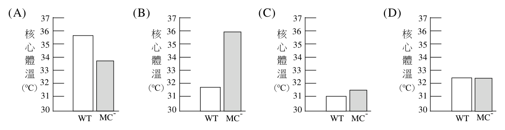
（A） （B） （C） （D） 37 37 37 37
核 36 核 36 核 36 核 36
心 35 心 35 心 35 心 35
體 34 體 34 體 34 體 34
33 33 33 33 溫 溫 溫 溫
32 32 32 32
(°C) (°C) (°C) (°C)
31 31 31 31
30 WT MC- 30 WT MC- 30 WT MC- 30 WT MC-答案：（B）
詳解與考點 正解：判準是急性 IgE 介導反應的效應細胞有無。再次接觸過敏原時，WT 的肥大細胞經由已結合的 IgE 被活化，釋出介質，引起嚴重反應與核心體溫下降；MC−缺少肥大細胞，缺乏同一條急性反應途徑。因此呈現「WT 下降、MC−接近原體溫」的（B）最符合，故選 B。介質作用的強弱會影響下降幅度，但不改變兩組反應方向的判斷。
A、C、D：若兩組同樣顯著下降、MC−下降更多，或 WT 維持不變，便無法呈現肥大細胞缺失所造成的保護效果。
本題考點：IgE 介導過敏反應（IgE-mediated allergy）——再次接觸同一過敏原時，已致敏的肥大細胞可被快速活化；肥大細胞（mast cell）——其釋放的介質是嚴重過敏反應的重要效應環節，缺失後反應應減弱；對照組設計（control comparison）——比較 WT 與缺失株時，先找出唯一被移除的細胞或基因，再預測反應方向。
第 27 題
對周邊溫度敏感的感覺神經元有兩種,一種具有離子通道TrpV4;另一種則具有離子通道
TrpV1。科學家為了探究是由哪一種感覺神經元負責將來自IgE / MCs發的過敏性反應的分
子訊息,轉傳給中樞神經系統,他們將引發IgE介導嚴重過敏性反應的過敏原,再次分別
注射到野生型小鼠(WT)、TrpV1基因剔除鼠(TrpV1-/-)、和TrpV4 37
基因剔除鼠(TrpV4-/-)體內,並於30分鐘後量測實驗動物的核
心體溫,結果如圖3所示。下列敘述何者最符合結果推論? 核 35
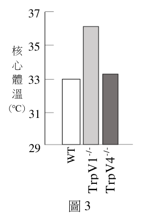
（A） IgE / MCs的分子訊息分別活化表現TrpV1和TrpV4的感覺 心
體 33
神經元,使二者產生動作電位 溫（B） IgE / MCs的分子訊息分別活化表現部分的TrpV1和TrpV4 (°C) 31
的感覺神經元,使二者產生動作電位（C） IgE / MCs的分子訊息主要活化表現TrpV1的感覺神經元, 29 WT
使其產生動作電位 TrpV1-/- TrpV4-/-（D） IgE / MCs的分子訊息主要活化表現TrpV4的感覺神經元,
使其產生動作電位 圖3答案：（C）
詳解與考點 正解：比較圖3三種小鼠的核心體溫，TrpV1 基因剔除後過敏反應所伴隨的體溫變化被明顯削弱，而 TrpV4 基因剔除仍保留接近野生型的反應，表示將 IgE/MCs 分子訊息傳向中樞的主要感覺神經元表現 TrpV1。故選 C。
A：結果只支持 TrpV1 為主要必要通道，不能由此推論 TrpV1、TrpV4 兩類感覺神經元都各自被活化並同等產生動作電位。
B：基因剔除與核心體溫的結果無法直接量到「部分」神經元的動作電位；這個說法既未指出主要通道，也超出實驗能支持的結論。
D：若 TrpV4 才是主要通道，TrpV4 基因剔除鼠應最明顯失去體溫反應；圖3的比較不支持這一預測。
本題考點：基因剔除（gene knockout）——比較 WT 與單一基因剔除株，先看哪一組失去表型以判定必要基因；感覺轉導（sensory transduction）——離子通道的存在與否可決定周邊訊息是否能形成神經訊號；因果推論（causal inference）——體溫為下游讀值，結論應限於主要傳遞途徑，不可直接擴張為所有神經元皆被活化。
第 28 題
科學家發現因IgE介導活化的肥大細胞所釋放的凝乳酶,具有活化溫度調節神經迴路的
作用。綜合文章描述下列哪一示意圖較適合本文的結論?(註解:→活化; 降低)
（A） 凝乳酶→TrpV1+/ TrpV4+感覺神經元→脊髓→腦幹→溫度調節中樞→BAT產熱（B） 凝乳酶→TrpV4+感覺神經元→脊髓→腦幹→溫度調節中樞→BAT產熱（C） 凝乳酶→TrpV1+感覺神經元→脊髓→腦幹→溫度調節中樞 BAT產熱（D） 凝乳酶→TrpV4+感覺神經元→脊髓→腦幹→溫度調節中樞 BAT產熱
三、實驗題(占1 4 分)答案：（C）
詳解與考點 正解：判準需同時確認被活化的感覺神經元亞型，以及溫度調節中樞對 BAT 產熱的輸出方向。當凝乳酶作用經 TrpV1+ 感覺神經元傳至脊髓、腦幹與溫度調節中樞，最後降低 BAT 產熱時，符合（C）的路徑安排，故選 C。
A：把 TrpV1+ 與 TrpV4+ 同時列為必經感覺神經元，擴大了需要被支持的機轉，不能只因兩者皆為感覺神經元便合併。
B：此路徑只保留 TrpV4+，與以 TrpV1+ 為受影響神經元的判準不同。
D：此路徑同樣將訊號放在 TrpV4+，因此即使末端產熱方向相同，起始神經元仍不符合。
本題考點：神經迴路示意（neural circuit diagram）——逐段核對起始刺激、受體或神經元、傳遞站與效應器；感覺神經元亞型（sensory neuron subtype）——名稱相近的 TrpV1+、TrpV4+ 不能互換；棕色脂肪組織產熱（BAT thermogenesis）——判讀箭頭圖時要同時看訊號是否活化與末端效應是增加或降低。
第 29 題 （多選）
小瑩在複式顯微鏡下觀察動物組織玻片,視野中觀察到少量細胞散佈於大量的細胞外
基質中。下列相關敘述哪些正確?
（A） 小瑩想把視野右上角的A細胞移至視野中央觀察,她應將玻片往左下方移動（B） 由於視野中細胞數量稀少,若小瑩想看較多的細胞,她應該轉換成較高倍物鏡（C） 在10倍物鏡下A細胞的最大直徑約為目鏡測微器的3小格長度,若於40倍物鏡下則
約為12小格長度（D） 該組織與脂肪、硬骨、軟骨和血液等組織同屬於結締組織（E） 該組織多分布於口腔黏膜表面,以保護口腔答案：（C）（D）
詳解與考點 正解：題幹的「少量細胞散佈於大量細胞外基質」是結締組織的形態線索；另一個判準是同一細胞在物鏡由10倍換到40倍時，影像跨越的目鏡測微器格數會增加為4倍。故選CD。
C：物鏡由10倍換成40倍，倍率變為4倍；原來約3小格的影像會變成約12小格。細胞的實際直徑沒有改變，改變的是視野中的影像大小。
D：細胞少而細胞外基質多符合結締組織的共同特徵；脂肪、硬骨、軟骨與血液都屬於結締組織。
A：複式顯微鏡下影像與玻片移動方向相反。要使視野右上角的影像移向中央，影像須往左下移，玻片應往右上移，不是往左下移。
B：提高物鏡倍率會縮小視野範圍；同一片玻片在視野中通常會看到較少而非較多細胞。
E：口腔黏膜表面負責保護的是上皮組織。題幹所示細胞外基質豐富的組織屬結締組織，通常位在上皮組織下方。
本題考點：顯微鏡成像（microscope imaging）——移動玻片前先決定影像要往哪裡移，再取相反方向；目鏡測微器（ocular micrometer）——同一物體在較高物鏡倍率下會占更多格數，實際大小不變；結締組織（connective tissue）——看到細胞稀疏、細胞外基質豐富時，優先判作結締組織。
第 30 題
某生以顯微鏡觀察植物組織細胞,並比較有無加碘液的變化。圖4為一種植物組織切片,
左圖為未加碘液,右圖則是加了碘液後組織片呈藍黑色。根據上述結果該生所觀察的可
能為下列哪一種組織細胞?
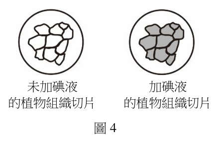
（A） 馬鈴薯塊莖薄壁細胞（B） 甘藷塊根表皮細胞（C） 甜菜儲藏根木質部細胞
未加碘液 加碘液（D） 甘蔗儲藏莖形成層細胞 的植物組織切片 的植物組織切片
圖4答案：（A）
詳解與考點 正解：碘液使組織切片呈藍黑色，是澱粉遇碘的特徵反應。馬鈴薯塊莖的薄壁細胞是儲存澱粉的主要組織，細胞中有大量澱粉粒，最符合觀察結果，故選 A。
B：甘藷塊根雖可儲存澱粉，但儲藏主要在薄壁細胞，不是表皮細胞；選項指定的細胞層不對。
C：甜菜儲藏根以糖類儲存為主，且木質部主要負責輸導與支持，不是以澱粉粒大量儲存的組織。
D：甘蔗儲藏莖主要累積蔗糖，形成層是分生組織；藍黑色碘反應指向澱粉，與這兩個特徵不合。
本題考點：澱粉的碘反應（iodine test for starch）——看到藍黑色先判斷有澱粉；植物儲藏組織（storage tissue）——判斷儲藏物時要連同器官與細胞種類，薄壁細胞常負責儲存；維管與分生組織——木質部重輸導、形成層重細胞分裂，不能因位在儲藏器官就推成儲藏細胞。
採取測試者X和測試者Y二位同學的血液後,分別與含有抗體A或抗體B溶液反應,凝集反應結果如表3。
表3
第 31 題
測試者X和Y的血型為何?
抗體A 抗體B
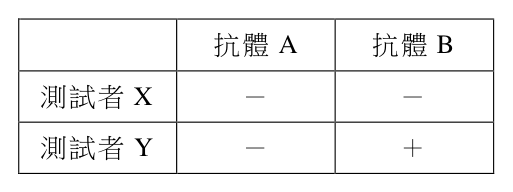
（A） X為AB型血,Y為B型血（B） X為AB型血,Y為A型血 測試者X - -（C） X為O型血,Y為A型血 測試者Y - +（D） X為O型血,Y為B型血答案：（D）
詳解與考點 正解：抗體A 會使帶有 A 抗原的紅血球凝集，抗體B 會使帶有 B 抗原的紅血球凝集。測試者 X 對兩種抗體皆為陰性，表示沒有 A、B 抗原，為 O 型血；測試者 Y 只對抗體B 呈陽性，表示有 B 抗原而無 A 抗原，為 B 型血。故選 D。
A：AB 型紅血球同時有 A、B 抗原，應同時對抗體A、抗體B 凝集，與 X 的雙陰性不符。
B：Y 若為 A 型，應對抗體A 凝集、對抗體B 不凝集，正好與表中 Y 的反應相反。
C：X 判為 O 型正確，但 Y 對抗體B 凝集表示有 B 抗原，不能判為 A 型。
本題考點：ABO 血型抗原（ABO antigens）——紅血球表面有哪種抗原，就會和對應抗體凝集；凝集試驗（agglutination test）——先把每個陽性反應翻成「存在何種抗原」，再組合成血型；O 型血——對抗體A、抗體B 都不凝集時，判斷為沒有 A、B 抗原。
第 32 題
將測試者S的血漿與測試者X和Y血液反應,皆無凝集反應。下列何者正確?
（A） S為B型或AB型（B） S為A型或B型（C） S為O型或AB型（D） S為O型或A型答案：（A）
詳解與考點 正解：第31題可知 X 為 O 型、Y 為 B 型。S 的血漿和 X、Y 的紅血球都不凝集，表示 S 血漿不能有抗 B，否則一定會使 Y 的 B 抗原凝集；S 可以只有抗 A，故可為 B 型，也可以沒有抗 A、抗 B，故可為 AB 型。故選 A。
B：A 型血漿含抗 B，會與 Y 的 B 型紅血球凝集，不能符合無凝集結果。
C：AB 型雖可行，但 O 型血漿同時含抗 A、抗 B，其中抗 B 會與 Y 的紅血球凝集，所以「O 型或 AB 型」不成立。
D：O 型與 A 型血漿都含抗 B，兩者都會使 Y 的 B 抗原凝集，沒有符合選項中的任一種可能。
本題考點：ABO 血漿抗體（ABO plasma antibodies）——A 型有抗 B、B 型有抗 A、O 型兩者皆有、AB 型兩者皆無；正反向血型鑑定（forward and reverse typing）——已知紅血球抗原後，用待測血漿是否凝集來反推其中抗體；必要條件——只要一種可能血型必會產生凝集，便不能列入「可能」的答案。
某生先準備酵母菌與糖水,再利用圖5之發酵管進行酵母菌對醣類發酵之觀測,據此回答下列問題。
第 33 題
下列對於實驗過程的說明,何者正確?
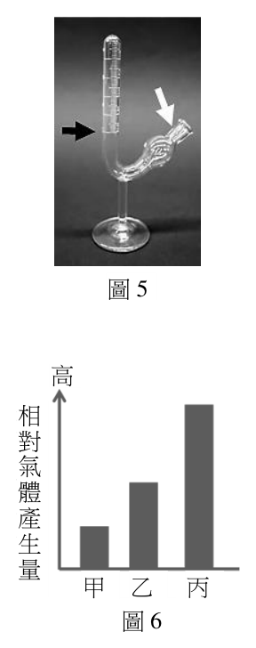
（A） 將酵母菌與糖水分別加入此發酵管後,需充分搖晃以讓兩者混合
均勻（B） 混合液體只能加到黑色箭頭標記處,以清楚觀測產氣情況（C） 發酵進行時,在混合液表面可觀測到含有二氧化碳的氣泡（D） 需在白色箭頭處塞入不可通氣的橡皮塞,留住氣體以準確記錄
圖5答案：（C）
詳解與考點 正解：酵母菌利用糖進行發酵時會產生二氧化碳，氣體由液體中逸出，因而可在混合液表面看到含有二氧化碳的氣泡；這正是發酵管可觀察的現象，故選 C。
A：酵母與糖水要能接觸即可，並非必須充分搖晃；劇烈搖晃會擾動原本用來觀察產氣與液面變化的系統。
B：加液的判準是保留適當的氣體收集空間並讓液面可讀取，不能僅以「只能」加到單一黑色箭頭位置概括。
D：發酵管以液體位移與氣泡來呈現產氣；在白色箭頭處完全封死不是真正量測二氧化碳的必要條件，也可能妨礙壓力調整與觀察。
本題考點：酒精發酵（alcoholic fermentation）——酵母分解糖時可生成酒精與 CO2，看到氣泡先連結 CO2；實驗裝置判讀（apparatus interpretation）——量測產氣時要同時保留反應液與可收集、觀察氣體的空間；操作變因（experimental variables）——混合應足以開始反應，但額外劇烈攪動不等於更準確。
第 34 題
某生在正確配置後開始進行甲、乙、丙三組的發酵實驗,結果如圖6所示。下列敘述何
者正確?
高
（A） 若甲組pH為7,那乙組pH可能是3
相（B） 若甲組與丙組加入相同濃度且同種類的糖水,丙組的反應溫
對
度可能為75°C 氣（C） 若乙組與丙組加入未知濃度等體積同種類的糖水,乙組的濃 體
產
度可能較低 生（D） 本實驗主要是觀測酵母菌的乳酸發酵作用 量
甲 乙 丙
圖6答案：（C）
詳解與考點 正解：圖6比較的是相對氣體產生量；若乙、丙兩組加入等體積且同種類糖水，並把其餘條件控制相同，乙組較低的產氣量可由較低的糖水濃度解釋。因此「可能較低」保留了實驗推論應有的條件性，故選 C。
A：相對氣體產生量不足以指定兩組的確切 pH 值；pH 只是可能影響酵母活性的變因，不能從柱狀結果直接推成 7 與 3 的特定數值。
B：75°C 會嚴重破壞酵母細胞與酶的活性，不能拿來合理說明圖中仍有發酵產氣的組別差異。
D：酵母菌在此以糖進行的是酒精發酵，主要產物為酒精與二氧化碳，不是乳酸發酵。
本題考點：控制變因（controlled variables）——比較糖水濃度時，糖類種類、體積與其他反應條件須相同；發酵速率（fermentation rate）——在其餘條件相同下，產氣量可作為發酵程度的間接指標；因果推論（causal inference）——圖表只能支持已控制條件下的可能解釋，不能憑結果反推未量測的精確 pH。
第 35 題
進行「花與果實多樣性」的探討活動時,學生們對如圖7的花朵進行觀察。下列選項為
不同學生的觀察心得,何者正確?
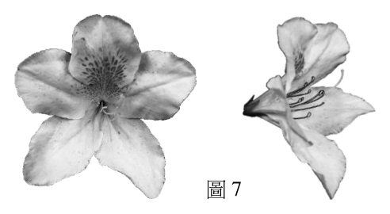
（A） 此花為輻射對稱（B） 此花有多個雄蕊,較可能為風媒花（C） 此花的雌蕊較雄蕊長,較可能為自花授粉（D） 此花具有漂亮的斑紋,較可能為蟲媒花
圖7答案：（D）
詳解與考點 正解：花瓣上顯眼的斑紋是吸引與引導昆蟲取蜜、攜帶花粉的視覺訊號，符合蟲媒花常具有醒目色彩與圖樣的特徵，故選 D。
A：圖中的花部排列不是以多個等同方向的花瓣繞中心放射的典型輻射對稱；判斷對稱性要比較各方向能否切成相似的兩半。
B：雄蕊數量多本身不足以判成風媒花。風媒花通常花被不顯眼、花粉量大且雄蕊與柱頭適於散播或接收花粉，不能只看一個構造。
C：雌蕊比雄蕊長會拉開柱頭與花藥的位置，較有利於減少同花自交或接受外來花粉，不是自花授粉的直接證據。
本題考點：蟲媒花（entomophilous flower）——看到鮮豔色彩、斑紋或蜜源構造時，優先連結吸引傳粉昆蟲；花的對稱性（floral symmetry）——輻射對稱可由多個方向切成相似兩半，兩側對稱通常只有一個平面；避免自交（herkogamy）——柱頭與花藥的空間分離可降低自花花粉落到柱頭的機會。
植物組織培養(Tissue culture)是在無菌情況下,將植株的一小部分放入特定培養基中,之後可以養成另一株完整的植物。請依據圖8及文本回答第36-37題。
第 36 題
下列有關組織培養的敘述,何者正確?
甲甲 甲甲
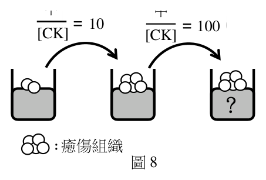
（A） 此技術是利用植物中多潛能幹細胞的特性 = 1010 = 100100 [CK][CK] [CK][CK]（B） 培養出的植物與來源植物應具有相同性狀（C） 只要有適當的刺激,即使使用死細胞也可
再活化而成為植株
?（D） 為一種利用有性生殖來量產植物的技術
: 癒傷組織癒傷組織
圖8答案：（B）
詳解與考點 正解：植物組織培養由活的植體組織在無菌培養基中形成癒傷組織，再分化成完整植株；屬於無性繁殖，來源相同的培養材料所長成植株通常具有相同遺傳組成與性狀，故選 B。
A：能再生成完整植株的關鍵是植物活細胞的全能性，不是只能分化成部分組織的多潛能幹細胞概念。
C：死細胞已失去代謝與分裂能力，不能在刺激後再活化形成癒傷組織或完整植株。
D：組織培養沒有經過配子結合與受精，利用的是無性繁殖，不是有性生殖。
本題考點：植物細胞全能性（plant cell totipotency）——活的植物細胞在適當培養條件下可再生成完整個體；組織培養（tissue culture）——無菌、培養基與植物激素共同控制癒傷組織及後續分化；無性繁殖（asexual reproduction）——沒有受精時，子代通常與親本有相同遺傳組成。
第 37 題
某生進行如圖8所示實驗,先以CK及植物激素甲(植物激素甲其濃度為〔CK〕的10倍)
加入的培養基,培養出癒傷組織後,再改以CK及植物激素甲(植物激素甲其濃度為〔CK〕
的100倍)加入的培養基培養。試問植物激素甲為何物?(2分)試問當甲的濃度比例升
高時,可刺激未分化細胞形成何種構造?(2分)
本題選項為上圖中的 A／B／C／D，請對照圖片作答。
標準答案未收錄
詳解與考點 正解：CK 是細胞分裂素（cytokinin）。圖8先在植物激素甲濃度為〔CK〕10 倍的條件下形成癒傷組織，再把甲提高到〔CK〕100 倍；隨甲相對於 CK 的比例升高而促進根的形成，符合生長素（auxin）相對含量高時誘導根分化的規則。故答案為生長素（auxin）；根。
本題考點：植物激素比例（plant hormone ratio）——組織培養要比較生長素與細胞分裂素的相對濃度，而非只看單一激素；生長素（auxin）——生長素相對細胞分裂素較高時，未分化細胞傾向形成根；癒傷組織（callus）——激素比例接近可維持未分化細胞，改變比例才導向器官分化。
長尾巧織雀(圖9)分布於非洲草原,繁殖季時雄鳥會在領域內低飛、展示尾羽,以吸引多隻雌鳥前來配對築巢。科學家為研究雄鳥尾羽長度與性擇之關聯,以繁殖季領域內的鳥巢數作為成功繁殖指標,捕捉雄鳥進行以下實驗操作:(1)縮短組:將尾羽剪短;(2)拉長組:黏貼羽毛、增加尾羽長度;(3)控制組A:不對尾羽做任何處理;(4)控制組B:將尾羽剪斷再黏回。調查發現,在實驗前後每隻雄鳥的領域沒有明顯變化,而領域內平均鳥巢數如圖10所示(柱狀圖上為實驗鳥外型示意圖)。
112年分科 第 10 頁 請記得在答題卷簽名欄位以正楷簽全名
生物考科 共 11 頁
實驗操作前 實驗操作後
每
一 2 2
雄
鳥
平 1 1
均
巢
數
0 0
縮 拉 控 控 縮 拉 控 控
短 長 制 制 短 長 制 制
A B A B
圖9 圖10
第 38 題
四組雄鳥飛行展示尾羽的頻率(每30分鐘之平均次數)如表4所示,試問展示頻率與繁
殖成功率的相關性為何?(2分)
表4
縮短組 拉長組 控制組A 控制組B
實驗前 9.2 10.8 10.3 10.3
實驗後 10.3 7.8 6.9 6.9
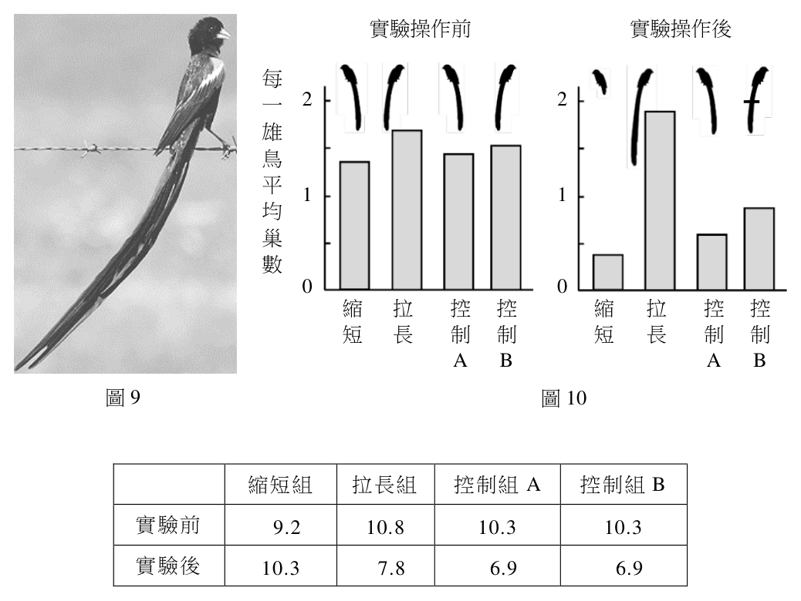
本題選項為上圖中的 A／B／C／D，請對照圖片作答。
標準答案未收錄
詳解與考點 正解：先比較展示頻率的改變量：縮短組為 10.3−9.2=+1.1 次/30 分鐘，拉長組為 7.8−10.8=−3.0 次/30 分鐘，兩個控制組皆為 6.9−10.3=−3.4 次/30 分鐘。再與圖10的繁殖成功率比較，尾羽拉長組的成功率提高並非伴隨較高展示頻率，縮短組則呈相反趨勢；因此展示頻率與繁殖成功率呈負相關，即展示頻率愈高，繁殖成功率愈低。故答案為負相關（展示頻率愈高，繁殖成功率愈低）。
本題考點：相關性（correlation）——先比較兩變項在各處理組的增減方向，同向為正相關、反向為負相關；控制組（control group）——不處理與剪後黏回兩組用來排除捕捉、剪羽等操作本身的影響；性擇（sexual selection）——尾羽長度影響繁殖成功時，要另檢驗展示頻率是否可能是中介變因，而不能只看單一組別。
第 39 題
請說明本實驗為何需要控制組B?(2分)
本題選項為上圖中的 A／B／C／D，請對照圖片作答。
標準答案未收錄
詳解與考點 正解：關鍵在控制組B也經歷捕捉、剪斷尾羽與黏貼羽毛，卻把原有尾羽長度恢復；它是處理過程的假操作對照。比較拉長組與控制組B，才能把鳥巢數的差異歸因於尾羽長度，而不是剪羽、黏貼、捕捉壓力或操作本身。作答應寫出「控制剪斷與黏貼操作的影響，使尾羽長度成為兩組的主要差異」。
本題考點：假操作對照（sham control）——處置含有剪除、注射或黏貼等操作時，對照組也要接受相同操作但不改變自變項；變因控制（control of variables）——兩組除研究變因外條件一致，結果才可用來支持因果關係。
第 40 題
下列哪項推論最符合此項實驗的觀察結果?
（A） 雌鳥會依據雄鳥尾羽長度擇偶（B） 雌鳥會依據雄鳥領域大小擇偶（C） 雄鳥尾羽長度會影響領域範圍（D） 尾羽有經修改後的雄鳥更吸引雌鳥答案：（A）
詳解與考點 正解：本題的判準是操作前後鳥巢數的改變，且題幹已說明各雄鳥領域沒有明顯變化。實驗後，拉長尾羽的組別較能吸引雌鳥築巢，縮短尾羽的組別則相反；控制組A與經過假操作的控制組B用來排除非尾羽長度的影響。因此觀察結果支持（A）雌鳥會依據雄鳥尾羽長度擇偶，故選 A。
B：題幹已明示實驗前後每隻雄鳥的領域沒有明顯變化，鳥巢數的差異不能歸因於領域大小。
C：本實驗操弄的是尾羽長度，並未改變領域範圍；把鳥巢數改變解作領域範圍改變，混淆了依變項與未變動的條件。
D：兩個實驗組都曾修改尾羽，但縮短組並不比控制組更具吸引力。分辨關鍵在尾羽變長，而不是只要尾羽受過修改。
本題考點：性擇（sexual selection）——若某性狀改變會改變配偶數或繁殖成功，該性狀可能受性擇作用；假操作對照（sham control）——比較實驗組與接受相同手術或處置的對照組，才能排除操作本身的效果；因果推論（causal inference）——先確認其他條件未變，再把結果差異連回被操弄的變因。
生物體內與外在環境的變動會對生物體造成刺激。刺激的種類繁多,但生物體可藉由不同的感覺受器接受刺激,並因應刺激的種類及強弱,產生特定的生理反應或行為,以下為人體感覺受器相關的問題,回答第41-43題。
第 41 題
聽覺是聲波透過內耳耳蝸內淋巴液發生震動,進而誘發何種受器細胞產生電位變化?
(2分)
標準答案未收錄
詳解與考點 正解：耳蝸內淋巴液的振動會使耳蝸中的毛細胞（hair cells）纖毛彎曲，進而造成膜電位改變並轉換成神經訊號。毛細胞屬機械受器，答案應寫「毛細胞」或「耳蝸毛細胞」，不是把聲波直接當成神經衝動。
本題考點：感覺轉導（sensory transduction）——受器把外界刺激轉成膜電位或神經訊號；機械受器（mechanoreceptor）——聲波、壓力與振動造成結構形變時，優先判斷為機械刺激，耳蝸毛細胞即為其例。
第 42 題
哪一種化學受器是特化的神經細胞,可接受外在環境中化學物質的刺激?(2分)
標準答案未收錄
詳解與考點 正解：可接受外在環境中化學物質刺激、且本身是特化神經細胞的受器是嗅覺受器細胞（olfactory receptor neurons），亦可寫為嗅細胞。氣味分子與其受器結合後，嗅覺受器細胞產生電位變化，再把訊號傳入嗅球；味覺受器細胞雖也偵測化學物質，但題幹強調的特化神經細胞特徵對應嗅覺受器。
本題考點：化學受器（chemoreceptor）——遇到氣味、味道或血液中化學濃度的訊號時，先辨認受器偵測的分子；嗅覺受器神經元（olfactory receptor neuron）——外界氣味可直接刺激其特化神經細胞，這是和多數味覺受器細胞的區別。
第 43 題
請寫出人類眼睛與彩色視覺相關,可以偵測特定波長範圍光線的光受器名稱。(2分)
標準答案未收錄
詳解與考點 正解：與彩色視覺相關、能分別偵測特定波長範圍光線的光受器是視錐細胞（cone cells）。不同類型的視錐細胞含有吸收峰不同的視覺色素，大腦比較各類視錐細胞的興奮程度後形成色覺；因此答案不是主要負責昏暗環境明暗感受的視桿細胞。
本題考點：視錐細胞（cone cells）——看到彩色、波長範圍或明亮環境時，判為視錐細胞；視桿細胞（rod cells）——看到微光、明暗或夜間視覺時，判為視桿細胞，兩者以功能情境區分。
科學家在2023年發現了細胞感染新型冠狀病毒(SARS-CoV-2)後,造成DNA損傷的
作用機制:在SARS-CoV-2感染的細胞中,參與強化細胞週期停滯的CHK1的表現量會受到
影響,接著影響CHK1下游因子RRM2(ribonucleoside-diphosphate reductase subunit M2)的表現,導致三磷酸去氧核苷酸(dNTPs)失衡(如圖11所示),最終造成DNA損傷。圖11甲為
CHK1與RRM2的mRNA表現量。圖11乙則是用西方墨點法所進行的蛋白質表現量偵測,帶
狀訊號的粗細與蛋白質表現量有正相關性,H3指確定蛋白質樣本使用量相同,病毒N指確
認病毒有感染成功。根據以上所提供的資訊及所學知識回答44-45題。
甲
CHK1 mRNA RRM2 mRNA
表現量 表現量
mRNA mRNA
0 1 24 0 1 24
病毒感染小時數 病毒感染小時數
乙 丙
病毒感染小時數
病毒感染: 沒有 有
0 1 24
CHK1
RRM2
H3 相對含量
病毒N
A C G T
dNTP 圖11
第 44 題
根據圖11甲與圖11乙,描述CHK1在病毒感染後的CHK1蛋白質表現量有何變化?(2分)
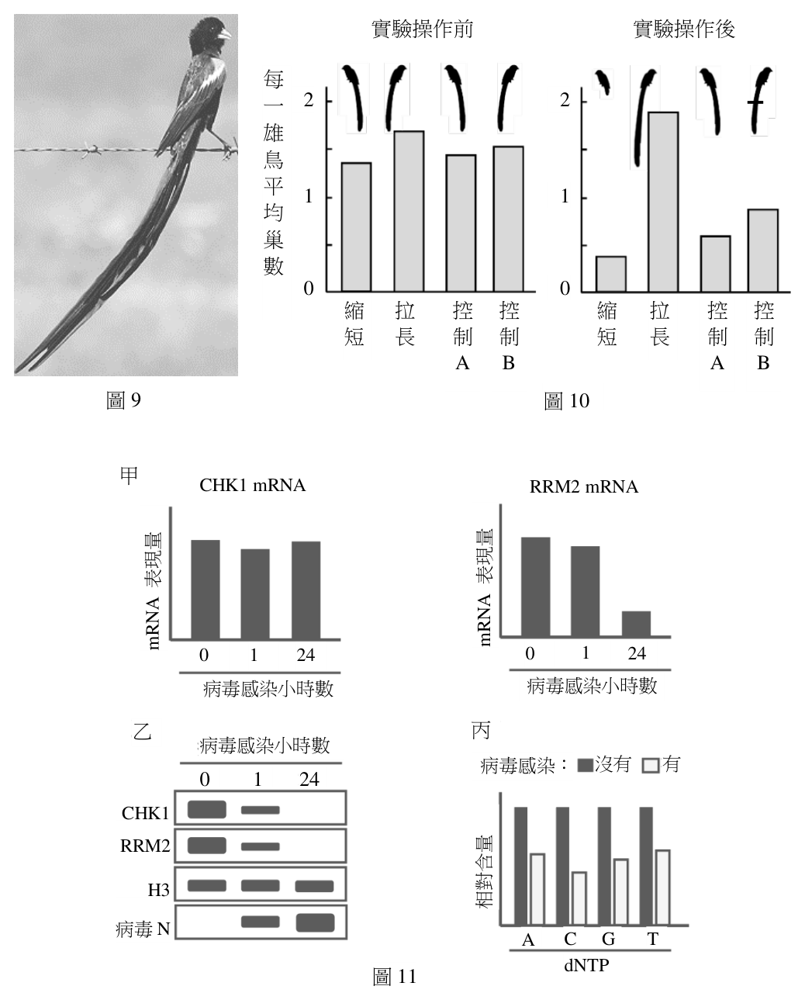
本題選項為上圖中的 A／B／C／D，請對照圖片作答。
標準答案未收錄
詳解與考點 正解：本題要把mRNA層次與蛋白質層次分開判讀。圖11乙中病毒感染後的CHK1帶狀訊號隨時間變弱，表示CHK1蛋白質表現量下降，24小時時下降最明顯；H3訊號用來確認樣本上樣量相同，病毒N訊號則確認感染成功。因此應答「病毒感染後CHK1蛋白質表現量下降」。
本題考點：西方墨點法（Western blot）——在其他條件一致時，帶狀訊號越強通常代表目標蛋白質越多；內部對照（loading control）——先確認H3等對照訊號穩定，才能把目標條帶改變解作蛋白表現量差異；基因表現層次（gene expression levels）——mRNA量與蛋白質量須分別由相應資料判讀，不可互相直接代替。
第 45 題
病毒造成三磷酸去氧核苷酸(dNTPs)失衡現象如圖11丙所示,此現象最有可能影響細
胞週期中的哪一個階段?(2分)為什麼?(2分)
本題選項為上圖中的 A／B／C／D，請對照圖片作答。
標準答案未收錄
詳解與考點 正解：dNTPs失衡最可能影響細胞週期的S期（S phase）。S期進行DNA複製，DNA聚合酶需要四種dNTPs作為原料；其中一種過多或不足都會使複製叉停滯、提高錯誤插入或DNA損傷的機會。因此作答應為「S期，因DNA複製需有比例適當的dNTPs」。
本題考點：S期（S phase）——看到DNA複製、核苷酸原料或複製叉時，優先判斷為S期；三磷酸去氧核苷酸（dNTPs）——四種dNTPs不僅要存在，比例也須平衡，失衡會造成複製壓力與基因體不穩定。
赫希(Hershey)和蔡斯(Chase)的噬菌體實驗證明遺傳物質為DNA,他們以不同的放射性同位素分別標定噬菌體的DNA和蛋白質殼體,再分別感染大腸桿菌。一段時間後,以果汁機攪拌,再以離心機離心,使試管中的培養液產生沉澱物和上方的懸浮液。本實驗的重大成就是證明進入細菌體內的遺傳物質是噬菌體的DNA。根據以上所提供的資訊及所學知識回答46-48題。
第 46 題
赫希和蔡斯以何種放射性同位素標定噬菌體的蛋白質分子?(2分)
標準答案未收錄
詳解與考點 正解：赫希與蔡斯以硫-35（³⁵S）標定噬菌體的蛋白質殼體。蛋白質可含硫胺基酸，而DNA不含硫，故³⁵S可專門追蹤蛋白質；相對地，DNA含磷而蛋白質殼體不以磷作為特徵標記，所以DNA使用磷-32（³²P）標定。
本題考點：同位素標定（isotope labeling）——選標記時要找只出現在欲追蹤分子、而不出現在比較分子的元素；赫希與蔡斯實驗（Hershey–Chase experiment）——³⁵S追蹤蛋白質、³²P追蹤DNA，再以放射性位置判斷何者進入細菌。
第 47 題
以果汁機攪拌的目的為何?(2分)
標準答案未收錄
詳解與考點 正解：果汁機攪拌的目的是把附著在大腸桿菌表面的噬菌體蛋白質殼體甩離細胞表面。攪拌不應破壞已進入細菌的遺傳物質；接著離心時，較重的細菌形成沉澱，脫離的蛋白質殼體留在上方懸浮液，便能比較兩種標記各自的位置。
本題考點：分離變因（experimental separation）——要追蹤哪一成分進入細胞，先設計步驟把仍在細胞外的成分移除；離心分層（centrifugal separation）——細胞通常隨沉澱取得，游離且較輕的成分較多留在懸浮液，判讀前要先分清兩層代表的材料。
第 48 題
若有一實驗重組的噬菌體具有A種噬菌體的蛋白質殼體和B種噬菌體的DNA,則感染細
菌後,新產生的噬菌體蛋白質殼體具有何種噬菌體特性?(2分)
標準答案未收錄
詳解與考點 正解：新產生的噬菌體蛋白質殼體會具有B種噬菌體的特性。雖然最初感染時外殼來自A種噬菌體，但真正進入細菌並提供合成指令的是B種DNA；細菌依B種DNA複製遺傳物質並合成對應的蛋白質殼體，所以子代特性由B種DNA決定。
本題考點：遺傳物質（genetic material）——判斷子代性狀時，要追蹤進入宿主並可被複製、表現的核酸，而非停留在宿主外的構造；基因表現（gene expression）——DNA所含資訊指導蛋白質合成，因此不同DNA來源會導向不同的蛋白質特性。
其他年度
回到分科測驗生物的年度總覽 ，
或到分科測驗題庫首頁 看其他科目。
題目與標準答案出自大考中心 分科測驗歷年試題（依著作權法 §9，考試試題不受著作權保護）。依中華民國《著作權法》第 9 條第 1 項第 5 款，
依法令舉行之各類考試試題不得為著作權之標的，得自由利用。詳解為 AI 整理的學習輔助，
並非官方標準答案 ；中華民國會修訂，引用前請對照現行版本查證。